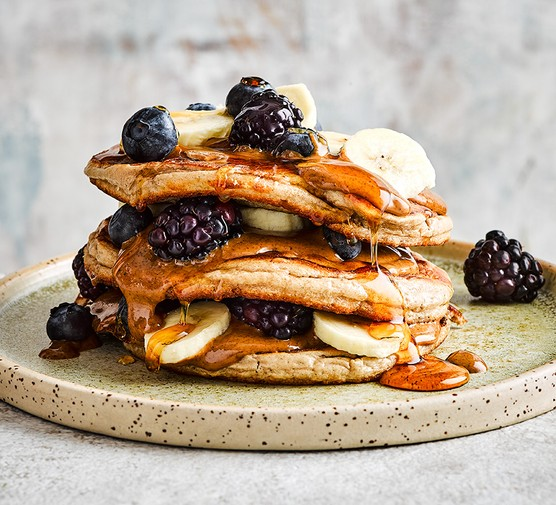

Protein Pancakes

Ahh, Pancakes. Who doesn't love a delicious serving of stacked pancakes served with oozing syrup?
I mean what could possibly get any better than that!? That's right, protein pancakes. We took regular pancakes and jam packed them with
some protein powder to help make them more nutritious! Now you don't have to feel guilty for indulging in this sweet delight and you can keep telling yourself you're staying in shape!
Ingredients
1 banana
75 grams of Oats
3 large eggs
2 tablespoons of any milk of your choice
1 tablespoon of baking powder
pinch of cinnamon
2 tablespoons of protein powder of your choice
Coconut oil
Sides & Toppings
Nut Butter
Maple Syrup
Berries
Sliced Banana
Equipment
Blender
Pan or griddle
Steps
- Whizz the banana, oats, eggs, milk, baking powder, cinnamon
and protein powder in a blender for 1-2 mins until smooth.
Check the oats have broken down, if not, blend for another minute.
- Heat a drizzle of oil in a pan. Pour or ladle in 2-3 rounds of batter,
leaving a little space between each to spread.
- Cook for 1-2 minutes, until bubbles start to appear on the surface and
the underside is golden. Flip over and cook for another minute until
cooked through. Transfer to a warmed oven and repeat with the remaining batter.
Finishing Touches
- Serve in stacks with nut butter, maple syrup and fruit.